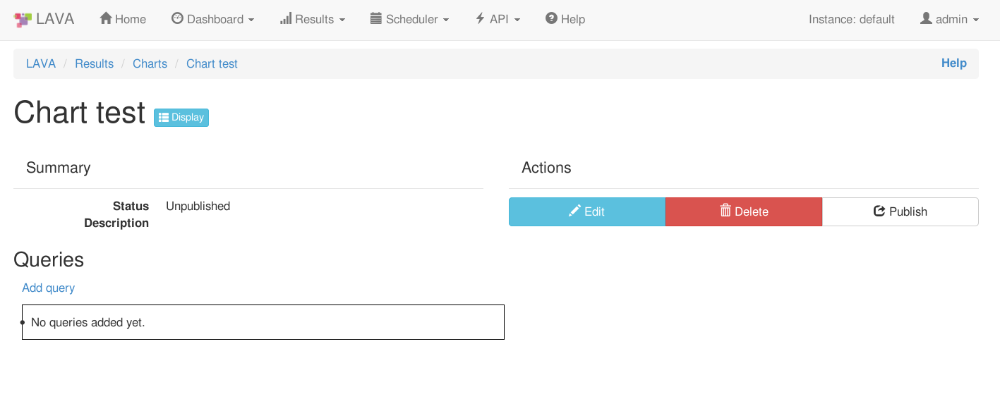

The most important use of test results is to close the CI loop and a good way to do that is to distribute the results directly to the developers in a format which those developers find to be the most useful.
LAVA, as a generic automation framework, cannot offer customized solutions for all development teams. A dedicated frontend should always be considered as this can collate LAVA results with build system data and commit history to provide a complete picture of the meaning of the results. Bare results are often useless and only the development team can provide the information needed to reformat the raw results in a way that includes the relevant context and background information.
Important
Take time to plan how the metadata is created, updated and parsed. Build numbers, commit hashes and developer branch names may all need to be passed into the metadata of your test jobs in LAVA to make sense of the results.
Test results can be used in a variety of ways, inside and outside of LAVA.
See also
For simple tasks, LAVA supports Queries and Charts. A Query is used to pick out interesting test jobs based on metadata, test case names, test suite names or test job submitter amongst other fields. Most Queries can then be used to create a single Chart to follow trends over time.
Note
Only V2 test jobs can be used with Queries and Charts.
A single query can be based on one of the following object sets:
You can add multiple conditions to each query where the query results must satisfy all conditions in order to be displayed. Conditions can span through multiple object sets so for example user can query the Jobs that have test cases in which particular field satisfies a condition. List of supported fields which can be used as condition field is available as autocomplete list in the condition ‘Field name’ field. You can also add conditions with fields in the object set which is queried (i.e. if test jobs are query object set user can add conditions such as submitter, health, device, priority, state…).
It is also possible to add conditions using custom metadata. Since metadata can contain custom field names, keep in mind that the query might not return desired results since those field names are not validated when adding conditions. This also means you can add the condition even if the field in the metadata is is not yet present in the system.
Queries can be live or cached. Cached queries data can be refreshed either through UI or via the XML-RPC API call by the creator or someone in group assigned to the query. Please keep in mind, live queries are executed whenever someone visits the query page or refreshes it. Viewing a live query will usually take longer than a cached query, sometimes markedly longer. Live queries can stress the LAVA server which can cause the query to timeout.
When adding/updating and removing conditions, query is not automatically updated. This needs to be done either through UI after updating the conditions or via XML-RPC.
Queries which are not published are visible exclusively to the query owner. When query is published, it’s results are generally visible to all users, providing that the user has access to the jobs which provide the results. All the authorization is managed through test jobs visibility rules, meaning that individual results will be omitted in the query display list depending on user authorization to see the specific jobs.
Besides owner of the specific query, administration of the query can be allowed to a group in the system as well, through the ‘Group edit permission’ option. Note that this can be done only after the query is published.
Queries can be organized in ‘query groups’ which is visible only in the query listing page, via ‘query group label’ option.
The ability to add conditions through URL is also available. User can add as many conditions as possible through URL but must also specify the object set which is to be queried.
The query string format looks like this:
entity=$(object_name)&conditions=$(object_name)__$(field_name)__$(operator)__$value,$(object_name)__$(field_name)__$(operator)__$value,...
Note
object_name can be omitted if it’s the same as the query object set. Operator is one of the following - exact, iexact, contains, gt, lt.
Once the query by URL results are displayed, user can create new query from these conditions, which will be automatically added to the query.
User should keep in mind that querying by URL is considered to be a live query so if the query is used often it should be created in the system so that the caching is enabled.
Currently, the only supported format for exporting is CSV.
User can download the query CSV export file from the query display page.
Ability to omit specific results from queries is available.
Users which have owner rights over specific query have the option to omit particular results in the query results display page. Keep in mind that this action will effect all the charts using this query as well, since charts pull the results from queries.
It is not possible to omit results from custom queries.
In LAVA, deleting a query does not really delete it, but rather ‘archives’ it so that if user created rather complex query, that query can be restored at a later point in time. Archived queries are only visible to superusers in the admin section of LAVA. If user tries to create a query with the same name and owner (himself) which was already archived, system will inform the user that it’s already in the system.
The XML-RPC API can be used to execute a named query and the calling script can then process the data to output a summary of the results.
Note
This example script relies on the Query using the test-job
Content Type as this allows the script to obtain the job ID which can then
be used in the second call to get_testcase_results_yaml.
def main(args): # change https to http when testing with localhost connection = xmlrpc.client.ServerProxy( "https://%s:%s@%s/RPC2" % (USER, TOKEN, HOSTNAME) ) data = connection.results.run_query(QUERY, 20, QUERY_USER) if not data: return 0 print("Job, Type, Message, Time") for result in data: job_lava = yaml.safe_load( connection.results.get_testcase_results_yaml(result["id"], "lava", "job") )[0] job_id = job_lava["job"] logged = job_lava["logged"] if result["status"] == INCOMPLETE: error_type = job_lava["metadata"]["error_type"] msg = job_lava["metadata"]["error_msg"] print("%s, '%s', '%s', '%s'" % (job_id, error_type, msg, logged)) continue elif result["status"] == COMPLETE: continue print("[%s] %s" % (job_lava["job"], STATUS_CHOICES[int(result["status"])][1])) return 0
Download / view the example python script.
The example script needs to be configured to include the token as well
as the hostname of the instance, the name of the query and the
query_user who owns the query as well as the user running the query.
USER = "neil.williams" TOKEN = "" QUERY = "testing-myjobs" QUERY_USER = "neil.williams" HOSTNAME = "localhost"
Note
The script uses the recommended https scheme to protect your
token. Most localhost instances do not support https, so this would
need alteration during testing with localhost.
CSV format.
Infrastructure or JobJob, Type, Message, Time
177863, 'Job', 'fastboot-flash-action timed out after 1702 seconds', '2017-07-05 17:38:35.540829+00:00'
177862, 'Job', 'fastboot-flash-action timed out after 1706 seconds', '2017-07-05 17:38:33.267313+00:00'
LAVA charts represent the visual representation of the Queries app.
On the Charts main page, after clicking on Create link and entering the name and the description for the Chart, you will be presented with the following page:
From there you can edit, remove or publish the chart. Furthermore, you can review, add and remove queries associated with this chart from this page.
User can also create new charts from queries. On the query display page, a simple click on the button will create the chart with this particular query already added to the chart (with default settings). There’s also a possibility of only viewing the chart for particular query without making it permanent in the system (also from query display).
Once chart is published, you can assign it to a chart group:
Once Chart is published, you can see the “Chart group label” field on the chart detail page. Clicking the field allows you to edit the grouping for that chart. If you want to assign the existing chart groups to this chart, just start typing the group name and the autocomplete field will display all the existing chart group starting with that term. If the chart group you enter does not exist, it will be automatically created and assigned to this chart.
Removing the chart group label from the chart group field will unassign this chart from any chart group. At that point, if the chart group you just unassigned does not have any more charts assigned to it, the chart group will be deleted.
Once Chart is published, you can see the ownership options on the chart detail page.
First field displays the “maintainer” username of the user who created this chart (this field cannot be changed).
The second field is where the system group editing rights can be added.
All users belonging to this system group (you can check your group membership on the Profile page) will be able to edit/update this particular chart as if they were maintainers.
This field cannot be used to enable users to see the data in the chart if they are not able to for other authorization reasons (no device permissions or test job visibility permissions).
In the Query field user can select the query they would like to chart with the help of the autocomplete feature.
Chart display depends mostly on the object set selected in the query so for example if the query object set is test job, charts will display results per test job, etc.
The “X axis” will by default represent the date (i.e. job completion date in case of the Test job query) but this behavior can be changed by utilizing the “X-axis attribute” field. This field must be correctly set to the existing metadata field. If done so, the X axis of the chart will be split into this fields’ values.
Chart type represents the type of information chart will be collecting from the query and currently options ‘Pass/fail’, ‘Measurement’ and ‘Attributes’ are supported.
Pass/fail charts will collect number of passed test results compared to total number of test results from each query object set. Each plot line in chart will represent query object set (test job or test suite). Keep in mind that pass/fail charts are unavailable for test case based queries.
Measurement charts will collect the measurement value from each of the corresponding test results. Unless the query object set is test job, each plot line in chart will represent one test case. Otherwise, the chart will calculate average value of each test case across related test suites and display that value.
Attributes chart will let you enter one or more of the custom attributes (separated by coma) and the chart will display that particular custom attribute value for each query object set. Each plot line in chart will represent one attribute value over object set. Keep in mind that there is no validation for this field.
Note that order of the query in the chart can be changed in the chart review page. Simple drag and drop of the queries in the list can be used for re-ordering.
See below for description of each specific feature of the display page.
You can click on each of the indices on the chart and a new tab will open with that particular test job/suite/case.
If mouse is hovered over the any of the indices on the chart, a tooltip will appear with either pass/fail number of tests or measurement value depending on the chart type. This tooltip will also contain information if there are any comments added to the test results and also metadata changes as well, where applicable.
Charts also have the ability of zooming in/out and panning. You can zoom in the chart by double-clicking anywhere on the chart and panning is available with mouse dragging. In the top right corner there is a small button for zooming out to previous setting. By doing any of the operation like test selection through legend(see Legend) or date selection or percentage toggle, the chart zooming/panning will be reset.
Legend displays the colors of the trends on chart and the aliases set up during image report creating (default is “filtername: testname: testcasename”).
Legend is also interactive. You can shuffle the items in the legend with drag and drop. The advantage to this is that the indices in the chart can overlap so in order to use the interactivity you might need to change the order of the legend items.
You can limit the dates in the dropdowns. Start date setting will be saved and automatically loaded once you visit this page next time.
By default, charts will use date and time to display results. User can change this behavior and use a custom attribute (i.e. build number) to plot the result data. This setting can be changed in the chart settings - ‘xaxis attribute’ field.
If the field is empty, the date/time will be used to plot the data. Users should keep in mind that this setting is a free text field so if the custom attribute set is not found in the system, no results will be shown. Similarly, if particular test result does not contain the custom attribute that is set, that result will be omitted from chart.
Ability to omit specific results from charts is available through plot click event.
Omitting results from chart will actually omit it from the underlying query, thus actively omitting it from all charts which include that query. It is not possible to omit results from custom charts or charts by URL from queries.
Keep in mind that the charts can have tightly packed plot points so you might end up omitting the wrong results. Keep caution by reducing the date range or zooming in on the chart.
Similar as for queries (see Query by URL), user can view charts by typing in the entity and conditions in URL. There is one additional option compared to queries, the chart type. New URL parameter is named “type” and can take values of pass/fail, measurement and attributes.

{kind=link}
{kind=link}